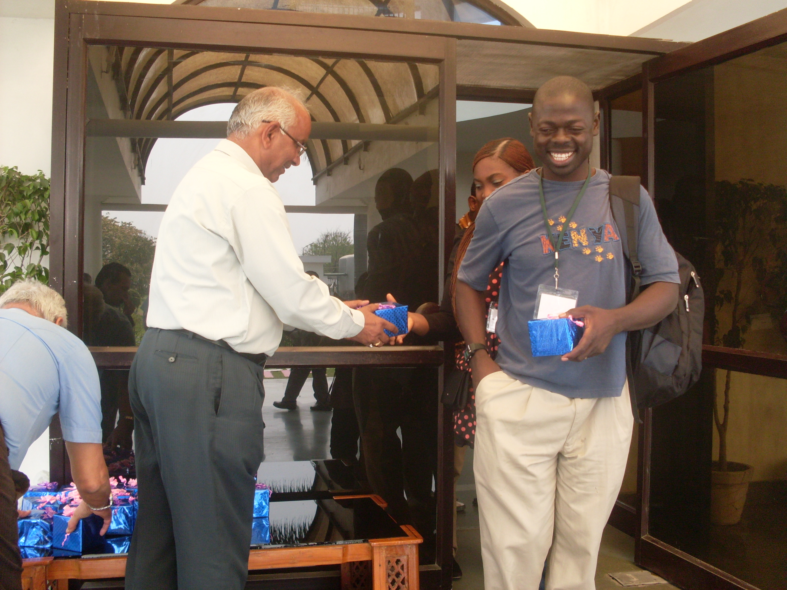

About Olweny Awa Francis

I grew up in Tororo, Uganda, in a family of Readers. As junior Laboratory Technician my career took me to India in my early thirties. Olweny Francis Awa is an IT specialist with a decade of successful experience in developing websites and helping clients with computer issues.
EDUCATION
Full stack Developer University of Washington Seattle to-date.
Project Management University of Washington Tacoma 2017 USA.
Nursing Assistant Certification Washington USA.
BS in Computer Science Kampala International University Kampala, Uganda 2013; World Education Services (WES) evaluated for US equivalency.
Science Laboratory Technology SLT Kyambogo University 2007 Uganda.